import os
import zipfile
import random
from PIL import Image, ImageDraw
import json
import pickle
from tqdm import tqdm
import numpy as np
import matplotlib.pyplot as plt
plt.rc("font", family="NanumGothic", size=13)
import warnings
warnings.filterwarnings('ignore')🪴 [cropdoctor] 인공지능 기반 웹서비스 개발 프로젝트
1. EDA
사용 데이터셋
인공지능 기반의 웹 서비스 개발 프로젝트에서 작물의 질병을 진단 주제를 선정했습니다. 해당 기능이 웹 서비스의 메인이며, 그에 따라 작물 질병 진단 인공지능을 개발합니다. 609GB나 되는 대용량 이미지 데이터여서 모든 데이터를 다운받지는 못 했지만, 팀원들과 우여곡절 끝에 학습을 진행할 수 있을 만큼의 데이터 다운로드는 성공했습니다. 결론적으로, 프로젝트 환경의 디스크 최대 용량이 300GB인 것을 고려하여 증강 데이터를 뺀 약 200GB 중 다운로드를 성공한 데이터 약 150GB를 사용하여 진행하였습니다.
수집한 데이터는 라벨데이터와 원천(이미지) 데이터로 이루어져있으며, 다음과 같은 폴더 구조로 VM에 적재하였습니다.
data
|_ training
|_ image_class
|_ 고추 정상
|_ 고추 질병 1
|_ ...
|_ label
|_ validation
|_ image_class
|_ 고추 정상
|_ 고추 질병 1
|_ ...
|_ label
# 경로 설정
path_train_img = "data/training/image_class/"
path_train_label = "data/training/label/"
path_valid_img = "data/validation/image_class/"
path_valid_label = "data/validation/label/"
# 경로에 들어있는 파일 리스트
lst_train_img = os.listdir(path_train_img)
lst_train_label = os.listdir(path_train_label)
lst_valid_img = os.listdir(path_valid_img)
lst_valid_label = os.listdir(path_valid_label)폴더 구조에 맞게 경로를 설정해주고, 그 안에 들어있는 파일이름을 각 변수에 리스트로 담아줍니다.
01. 라벨 데이터
라벨 데이터와 원천 데이터 중 라벨 데이터를 먼저 탐색합니다.
라벨 데이터 예시
먼저, 라벨 데이터 하나가 어떻게 생겼는지 확인해봅니다.
myzip_r = zipfile.ZipFile(path_train_label+"[라벨]잎마름병(토마토)_1.질병.zip", 'r')
print(myzip_r.namelist()[:3])
json_str = myzip_r.read('V006_79_1_15_07_03_12_1_2656z_20201104_19.jpg.json')
json.loads(json_str)['V006_79_1_15_07_03_12_1_2656z_20201104_19.jpg.json', 'V006_79_1_15_07_03_12_1_2656z_20201104_37.jpg.json', 'V006_79_1_15_07_03_12_1_2656z_20201105_38.jpg.json']{'description': {'image': 'V006_79_1_15_07_03_12_1_2656z_20201104_19.jpg',
'date': '2020/11/04',
'worker': '',
'height': 3024,
'width': 4032,
'task': 79,
'type': 1,
'region': 5},
'annotations': {'disease': 15,
'crop': 7,
'area': 3,
'grow': 12,
'risk': 1,
'points': [{'xtl': 1746, 'ytl': 1472, 'xbr': 2528, 'ybr': 3024}]}}위와 같이 json 형식으로 구성되어있습니다. 파일 하나당 하나의 이미지로 되어있기 때문에, 라벨 데이터를 사용할 때마다 각각을 불러오기에는 비효율적이라는 생각이 들어, 필요한 데이터들만 추출하여 하나의 딕셔너리에 담는 처리를 진행하겠습니다.
모델 학습 시 필요한 데이터들을 추려보면 질병, 작물, 바운딩박스, 이미지 크기 정도 입니다. 따라서 {image: {disease, crop, points, (width, height)}, …} 와 같은 형태로 구성되도록 처리합니다.
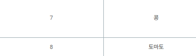
한가지 더 고려할 점은 콩과 토마토입니다. 데이터 검수를 진행하던 중 aihub 홈페이지와 라벨링이 다르게 되어있는 점을 발견하였습니다. aihub에서는 콩이 7, 토마토가 8인데, 라벨 데이터에서 토마토가 7, 콩이 8 로 되어있었습니다. 이 점도 함께 고려하여 라벨데이터를 처리합니다.
라벨 데이터 처리
라벨 데이터에서 처리해야 하는 항목은 다음과 같습니다.
- 라벨링 처리
- 콩, 토마토 라벨 처리: aihub 라벨과 다른 오류를 처리합니다.
- 수집한 작물만 남겨놓고, 라벨 재설정: 고추, 무, 배추, 애호박, 콩, 토마토, 호박만 수집 성공하였으므로 이외의 라벨 데이터는 없애줍니다.
- 작물 별 정상 라벨링: 모든 작물의 정상 데이터는 0으로 되어있었는데, 작물 별로 구분하여 재설정합니다.
- 이미지 별 작물, 질병, 바운딩 박스, 이미지 사이즈 딕셔너리 생성
- {image: {disease, crop, points, (width, height)}, …} 의 형태로, 라벨 데이터에서 필요한 데이터만 추출하여 하나의 딕셔너리에 모아줍니다.
이름 변환 딕셔너리
우선 라벨 데이터를 처리하기 위한 딕셔너리들을 선언합니다.
##### 작물 #####
# 원본 라벨
crop2name = {
1: "고추",
2: "무",
3: "배추",
4: "애호박",
5: "양배추",
6: "오이",
8: "콩",
7:"토마토",
9: "파",
10: "호박"}
# 수집한 데이터만 라벨 재설정
crop2name_pre = {
1: 1,
2: 2,
3: 3,
4: 4,
8: 5,
7: 6,
10: 7}
# 작물 이름과 매치
crop2name_new = {
1: "고추",
2: "무",
3: "배추",
4: "애호박",
5: "콩",
6: "토마토",
7: "호박"}##### 질병 #####
# 원본 질병 라벨
disease2name = {
0: "정상",
1: "고추탄저병",
2: "고추흰가루병",
3: "무검은무늬병",
4: "무노균병",
5: "배추검음썩음병",
6: "배추노균병",
7: "애호박노균병",
8: "애호박흰가루병",
9: "양배추균핵병",
10: "양배추무름병",
11: "오이노균병",
12: "오이흰가루병",
13: "콩불마름병",
14: "콩점무늬병",
15: "토마토잎마름병",
16: "파검은무늬병",
17: "파노균병",
18: "파녹병",
19: "호박노균병",
20: "호박흰가루병"}
# 수집한 데이터만 라벨 재설정 (정상 데이터 라벨 비워놓기)
disease2name_pre = {
1: 1,
2: 2,
3: 4,
4: 5,
5: 7,
6: 8,
7: 10,
8: 11,
13: 13,
14: 14,
15: 16,
19: 18,
20: 19}
# 정상 데이터를 포함하여 질병 이름과 매치
disease2name_new = {
0: "고추정상",
1: "고추탄저병",
2: "고추흰가루병",
3: "무정상",
4: "무검은무늬병",
5: "무노균병",
6: "배추정상",
7: "배추검음썩음병",
8: "배추노균병",
9: "애호박정상",
10: "애호박노균병",
11: "애호박흰가루병",
12: "콩정상",
13: "콩불마름병",
14: "콩점무늬병",
15: "토마토정상",
16: "토마토잎마름병",
17: "호박정상",
18: "호박노균병",
19: "호박흰가루병"}
# 작물 라벨에 따른 질병의 정상 라벨
crop2normal = {
1: 0,
2: 3,
3: 6,
4: 9,
5: 12,
6: 15,
7: 17}image별 딕셔너리 생성
위에서 선언한 라벨 딕셔너리를 활용하여, 이미지 별로 작물, 질병 라벨을 처리하여 담고, 바운딩 박스, 이미지 사이즈도 함께 담아 하나의 딕셔너리에 모아줍니다.
train
dic_img2label_train = {}
for file in tqdm(lst_train_label[:-1]):
myzip_r = zipfile.ZipFile(path_train_label+file, 'r')
for name in myzip_r.namelist():
j = json.loads(myzip_r.read(name))
disease, crop, points = j['annotations']['disease'], crop2name_pre[j['annotations']['crop']], j['annotations']['points'][0]
width, height = j['description']['width'], j['description']['height']
if disease == 0:
disease = crop2normal[crop]
else:
disease = disease2name_pre[disease]
dic_img2label_train[j['description']['image']] = {'disease': disease, 'crop': crop, 'points': points, 'size': (width, height)}100%|██████████| 14/14 [00:04<00:00, 3.28it/s]test
dic_img2label_val = {}
for file in tqdm(lst_valid_label[:-1]):
myzip_r = zipfile.ZipFile(path_valid_label+file, 'r')
for name in myzip_r.namelist():
j = json.loads(myzip_r.read(name))
disease, crop, points = j['annotations']['disease'], crop2name_pre[j['annotations']['crop']], j['annotations']['points'][0]
if disease == 0:
disease = crop2normal[crop]
else:
disease = disease2name_pre[disease]
dic_img2label_val[j['description']['image']] = {'disease': disease, 'crop': crop, 'points': points, 'size': (width, height)}100%|██████████| 14/14 [00:00<00:00, 18.79it/s]처리한 딕셔너리를 피클로 저장하여 필요할 때마다 로드할 수 있도록 합니다.
# 저장
# train
with open("data_preprocessing/dic_img2label_train.pickle","wb") as fw:
pickle.dump(dic_img2label_train, fw)
# validation
with open("data_preprocessing/dic_img2label_val.pickle","wb") as fw:
pickle.dump(dic_img2label_val, fw)# 로드
# train
with open("data_preprocessing/dic_img2label_train.pickle","rb") as fr:
dic_img2label_train = pickle.load(fr)
# validation
with open("data_preprocessing/dic_img2label_val.pickle","rb") as fr:
dic_img2label_val = pickle.load(fr)라벨 데이터 살펴보기
위에서 생성한 이미지 별 라벨 데이터 딕셔너리를 사용하여 데이터의 라벨 비율을 살펴보겠습니다.
노지작물 비율
lst_crop_cnt = [0] * 7
for dic_value in tqdm(dic_img2label_train.values()):
lst_crop_cnt[dic_value['crop']-1] += 1 100%|██████████| 78335/78335 [00:00<00:00, 2008011.02it/s]fig = plt.figure(figsize=(13, 7))
ax = fig.subplots()
bars = ax.bar(range(len(lst_crop_cnt)), lst_crop_cnt, color='#8ebe8d', edgecolor = 'black')
ax.set_xticks(range(len(lst_crop_cnt)))
ax.set_xticklabels(["고추", "무", "배추", "애호박", "콩", "토마토", "호박"], fontsize=20)
ax.set_ylim(0, 13000)
plt.title("노지작물 별 개수", fontsize=20, pad=10)
for i, b in enumerate(bars.patches):
_=plt.text(b.get_x()+b.get_width()*(1/2),b.get_height()+300, \
round(b.get_height()),ha='center',fontsize=15, color='k')
plt.show()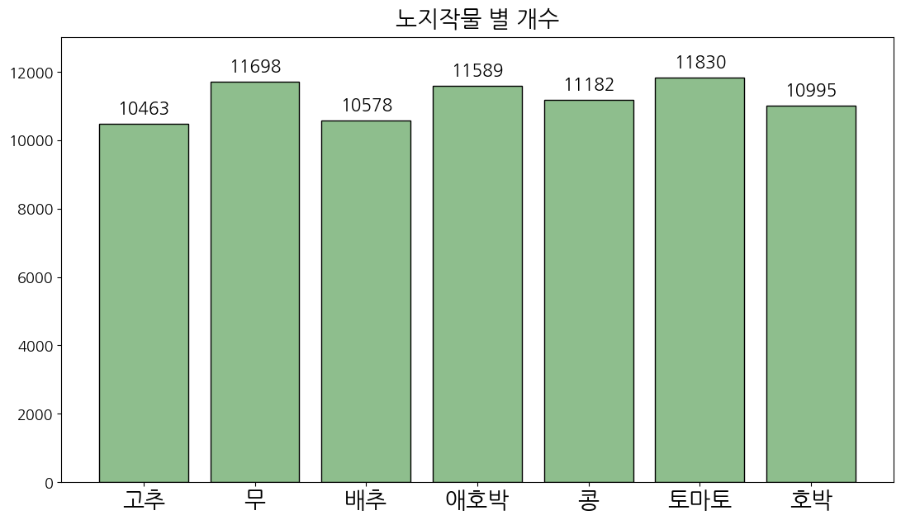
각 작물의 개수는 균등한 것으로 보입니다.
정상 / 질병 데이터의 비율
cnt_normal = 0
for dic in tqdm(dic_img2label_train.values()):
if dic['disease'] in [0, 3, 6, 9, 12, 15, 17]:
cnt_normal += 1100%|██████████| 78335/78335 [00:00<00:00, 2056499.80it/s]print("데이터 총 개수: ", sum(lst_disease_cnt))
print("정상 데이터의 개수: ", cnt_normal)
print("질병 데이터의 개수: ", sum(lst_disease_cnt) - cnt_normal)
fig = plt.figure(figsize=(5, 3))
ax = fig.subplots()
bars = ax.bar(range(2), [cnt_normal, sum(lst_disease_cnt) - cnt_normal], color='#e0a4b2', edgecolor = 'black')
ax.set_xticks(range(2))
ax.set_xticklabels(["정상", "질병"], fontsize=12)
ax.set_ylim(0, 90000)
plt.title("정상 vs 질병", fontsize=13, pad=10)
for i, b in enumerate(bars.patches):
_=plt.text(b.get_x()+b.get_width()*(1/2),b.get_height()+5000, \
round(b.get_height()),ha='center',fontsize=12, color='k')
plt.show()데이터 총 개수: 78335
정상 데이터의 개수: 71421
질병 데이터의 개수: 6914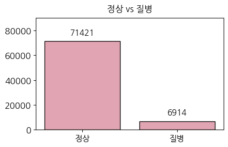
정상 데이터와 질병 데이터의 개수를 시각화 해보았을 때, 불균형이 심한 것을 확인하였습니다. 더 자세히 보기 위해 작물 별 정상 데이터와 질병데이터를 확인해보겠습니다.
레이블 비율
lst_disease_cnt = [0] * 20
for dic_value in tqdm(dic_img2label_train.values()):
lst_disease_cnt[dic_value['disease']] += 1 100%|██████████| 78335/78335 [00:00<00:00, 1259471.33it/s]dic_num2disease = {
1: ["고추정상", "고추탄저병", "고추흰가루병"],
2: ["무정상", "무검은무늬병", "무노균병"],
3: ["배추정상", "배추검음썩음병", "배추노균병"],
4: ["애호박정상", "애호박노균병", "애호박흰가루병"],
5: ["콩정상", "콩불마름병", "콩점무늬병"],
6: ["토마토정상", "토마토잎마름병"],
7: ["호박정상", "호박노균병", "호박흰가루병"]
}
lst_c = ['#8b1e0d', '#8b1e0d', '#8b1e0d', 'w', 'w', 'w', '#99b563', '#99b563', '#99b563', '#d4de3a', '#d4de3a', '#d4de3a', '#4f4f4f', '#4f4f4f', '#4f4f4f', 'r', 'r', '#d57b13', '#d57b13', '#d57b13']
fig = plt.figure(figsize=(15, 5))
ax = fig.subplots()
bars = ax.bar(range(len(lst_disease_cnt)), lst_disease_cnt, color=lst_c, edgecolor = 'black')
ax.set_xticks(range(len(lst_disease_cnt)))
ax.set_xticklabels(["고추정상", "고추탄저병", "고추흰가루병",
"무정상", "무검은무늬병", "무노균병",
"배추정상", "배추검음썩음병", "배추노균병",
"애호박정상", "애호박노균병", "애호박흰가루병",
"콩정상", "콩불마름병", "콩점무늬병",
"토마토정상", "토마토잎마름병",
"호박정상", "호박노균병", "호박흰가루병"], fontsize=15, rotation=45)
ax.set_ylim(0, 12500)
plt.title("노지작물 질병 별 개수", fontsize=20, pad=10)
for i, b in enumerate(bars.patches):
_=plt.text(b.get_x()+b.get_width()*(1/2),b.get_height()+200, \
round(b.get_height()),ha='center',fontsize=12, color='k')
plt.show()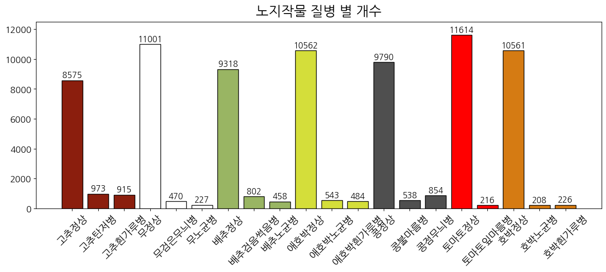
작물 별 정상/질병 데이터는 총 20개의 카테고리로, 최종적인 모델학습의 레이블이기도 합니다.
시각화하여 살펴보니 작물 별 정상/질병 데이터의 불균형 문제가 존재하는 것을 확인하였습니다.
따라서 다음과 같은 방법을 사용하고자 합니다.
1. 랜덤샘플링
각 작물마다 정상 데이터에서 1000장을 랜덤으로 샘플링합니다. 이는 불균형을 줄이기 위해서도 맞지만, 그와 동시에 용량을 줄이기 위해 진행합니다. 제공받은 GPU 성능 및 디스크 용량으로 약 8000장의 모델 학습을 돌리기엔 어려움이 있었기에, 이 방법을 우선 선택하였습니다.
2. WCE (Weighted cross entropy)
정상 데이터를 1000장 랜덤 샘플링 한 후에도 몇몇 레이블은 불균형이 여전히 심할 것입니다. 따라서 모델 학습 시 WCE를 사용하여 가중치를 주면서 불균형을 극복하고자 합니다.
랜덤 샘플링
데이터가 너무 많고, 불균형을 줄이기 위해 정상 데이터에서 1000장을 랜덤으로 추출하여 데이터의 크기를 줄였으며, 팀원들과 수작업으로 진행하였습니다.
랜덤 샘플링 된 이미지의 라벨 데이터만 모아서 앞과 동일하게 시각화로 확인 합니다.
라벨 데이터 재 처리
앞서 생성한 딕셔너리 dic_img2label_train에서 랜덤 샘플링된 이미지만 추출하여 dic_img2label_train_sampling 딕셔너리에 넣어주고, 똑같이 pickle 파일로 저장해줍니다.
lst_crop_folder_train = os.listdir(path_train_img)
lst_crop_folder_valid = os.listdir(path_valid_img)
dic_img2label_train_sampling = {}
dic_img2label_valid_sampling = {}
for folder in tqdm(lst_crop_folder_train):
for img in os.listdir(path_train_img + folder):
if img == '.ipynb_checkpoints':
continue
dic_img2label_train_sampling[img] = dic_img2label_train[img]
for folder in tqdm(lst_crop_folder_valid):
for img in os.listdir(path_valid_img + folder):
if img == '.ipynb_checkpoints':
continue
dic_img2label_valid_sampling[img] = dic_img2label_val[img]100%|██████████| 20/20 [00:00<00:00, 951.73it/s]
100%|██████████| 20/20 [00:00<00:00, 1587.10it/s]# 저장
# train
with open("data_preprocessing/dic_img2label_train_sampling.pickle","wb") as fw:
pickle.dump(dic_img2label_train_sampling, fw)
# validation
with open("data_preprocessing/dic_img2label_valid_sampling.pickle","wb") as fw:
pickle.dump(dic_img2label_valid_sampling, fw)# 로드
# train
with open("data_preprocessing/dic_img2label_train_sampling.pickle","rb") as fr:
dic_img2label_train_sampling = pickle.load(fr)
# validation
with open("data_preprocessing/dic_img2label_valid_sampling.pickle","rb") as fr:
dic_img2label_valid_sampling = pickle.load(fr)노지작물 비율
lst_crop_cnt = [0] * 7
for dic_value in tqdm(dic_img2label_train_sampling.values()):
lst_crop_cnt[dic_value['crop']-1] += 1 100%|██████████| 13915/13915 [00:00<00:00, 1197745.45it/s]fig = plt.figure(figsize=(13, 7))
ax = fig.subplots()
bars = ax.bar(range(len(lst_crop_cnt)), lst_crop_cnt, color='#8ebe8d', edgecolor = 'black')
ax.set_xticks(range(len(lst_crop_cnt)))
ax.set_xticklabels(["고추", "무", "배추", "애호박", "콩", "토마토", "호박"], fontsize=20)
ax.set_ylim(0, 3100)
plt.title("랜덤 샘플링 후: 노지작물 별 개수", fontsize=20, pad=10)
for i, b in enumerate(bars.patches):
_=plt.text(b.get_x()+b.get_width()*(1/2),b.get_height()+50, \
round(b.get_height()),ha='center',fontsize=15, color='k')
plt.show()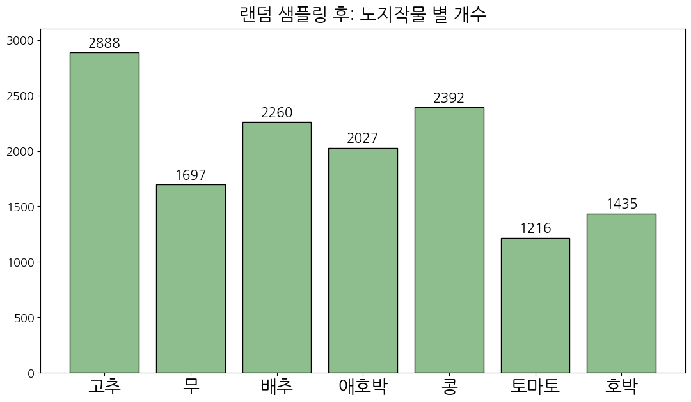
정상 데이터의 개수를 줄이니, 질병 데이터의 불균형이 전체 데이터에서도 드러나는 것을 확인할 수 있습니다.
정상 / 비정상 데이터의 비율
cnt_normal = 0
for dic in tqdm(dic_img2label_train_sampling.values()):
if dic['disease'] in [0, 3, 6, 9, 12, 15, 17]:
cnt_normal += 1100%|██████████| 13915/13915 [00:00<00:00, 2021955.31it/s]print("데이터 총 개수: ", sum(lst_disease_cnt))
print("정상 데이터의 개수: ", cnt_normal)
print("질병 데이터의 개수: ", sum(lst_disease_cnt) - cnt_normal)
fig = plt.figure(figsize=(5, 3))
ax = fig.subplots()
bars = ax.bar(range(2), [cnt_normal, sum(lst_disease_cnt) - cnt_normal], color='#e0a4b2', edgecolor = 'black')
ax.set_xticks(range(2))
ax.set_xticklabels(["정상", "질병"], fontsize=12)
ax.set_ylim(0, 9000)
plt.title("랜덤 샘플링 후: 정상 vs 질병", fontsize=13, pad=10)
for i, b in enumerate(bars.patches):
_=plt.text(b.get_x()+b.get_width()*(1/2),b.get_height()+500, \
round(b.get_height()),ha='center',fontsize=12, color='k')
plt.show()데이터 총 개수: 13915
정상 데이터의 개수: 7001
질병 데이터의 개수: 6914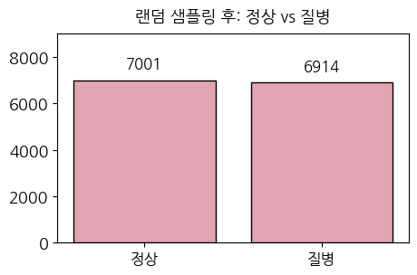
데이터를 모두 합쳤을 때는 정상 데이터와 질병 데이터의 불균형이 확연히 줄어든 것처럼 보이지만 위에서 확인한 것과 같이 그렇지 않습니다. 데이터의 총 개수를 보면, 랜덤샘플링 전 78335개에서 13915개로 대폭 줄어든 것을 확인할 수 있습니다.
레이블 비율
lst_disease_cnt = [0] * 20
for dic_value in tqdm(dic_img2label_train_sampling.values()):
lst_disease_cnt[dic_value['disease']] += 1 100%|██████████| 13915/13915 [00:00<00:00, 346903.51it/s]dic_num2disease = {
1: ["고추정상", "고추탄저병", "고추흰가루병"],
2: ["무정상", "무검은무늬병", "무노균병"],
3: ["배추정상", "배추검음썩음병", "배추노균병"],
4: ["애호박정상", "애호박노균병", "애호박흰가루병"],
5: ["콩정상", "콩불마름병", "콩점무늬병"],
6: ["토마토정상", "토마토잎마름병"],
7: ["호박정상", "호박노균병", "호박흰가루병"]
}
lst_c = ['#8b1e0d', '#8b1e0d', '#8b1e0d', 'w', 'w', 'w', '#99b563', '#99b563', '#99b563', '#d4de3a', '#d4de3a', '#d4de3a', '#4f4f4f', '#4f4f4f', '#4f4f4f', 'r', 'r', '#d57b13', '#d57b13', '#d57b13']
fig = plt.figure(figsize=(15, 5))
ax = fig.subplots()
bars = ax.bar(range(len(lst_disease_cnt)), lst_disease_cnt, color=lst_c, edgecolor = 'black')
ax.set_xticks(range(len(lst_disease_cnt)))
ax.set_xticklabels(["고추정상", "고추탄저병", "고추흰가루병",
"무정상", "무검은무늬병", "무노균병",
"배추정상", "배추검음썩음병", "배추노균병",
"애호박정상", "애호박노균병", "애호박흰가루병",
"콩정상", "콩불마름병", "콩점무늬병",
"토마토정상", "토마토잎마름병",
"호박정상", "호박노균병", "호박흰가루병"], fontsize=15, rotation=45)
ax.set_ylim(0, 1100)
plt.title("랜덤 샘플링 후: 노지작물 라벨 별 개수", fontsize=20, pad=10)
for i, b in enumerate(bars.patches):
_=plt.text(b.get_x()+b.get_width()*(1/2),b.get_height()+20, \
round(b.get_height()),ha='center',fontsize=12, color='k')
plt.show()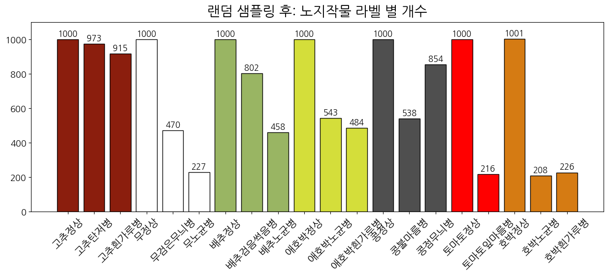
정상 이미지가 모두 1000장으로 줄어든 것 확인하였으며, 역시 아직 불균형이 존재합니다. 이는 앞서 말했듯, 모델 학습 시 WCE 기법을 사용하도록 합니다.
02. 이미지 데이터
이미지 확인
이미지의 라벨데이터를 활용하여 레이블 매치 및 바운딩 박스를 함께 그려 데이터를 확인하는 함수를 생성하였습니다. 인자에 원하는 레이블의 숫자를 넣으면 그에 대한 이미지를 랜덤으로 9장 뽑아옵니다.
lst_train_img_folder = sorted([folder for folder in sorted(lst_train_img) if 'ipynb' not in folder])
# 라벨 별 랜덤 이미지 9장 뽑아오는 함수
def show_images_by_label(folder_num):
folder = lst_train_img_folder[folder_num]
lst_forder_img = os.listdir(path_train_img + folder)
lst_nums = random.sample(range(len(lst_forder_img)), 9)
fig = plt.figure(figsize=(13, 13))
axes = fig.subplots(3, 3).flatten()
fig.suptitle(f"{disease2name_new[folder_num]}", fontsize=20)
for i, num in enumerate(lst_nums):
img_name = lst_forder_img[num]
img = Image.open(path_train_img + folder + '/' + img_name)
d1 = dic_img2label_train[img_name]
crop, disease, points = d1['crop'], d1['disease'], d1['points']
draw = ImageDraw.Draw(img)
draw.rectangle([(points['xtl'], points['ytl']), (points['xbr'], points['ybr'])], outline=(255, 0, 255), width=30)
axes[i].imshow(np.array(img))show_images_by_label(1)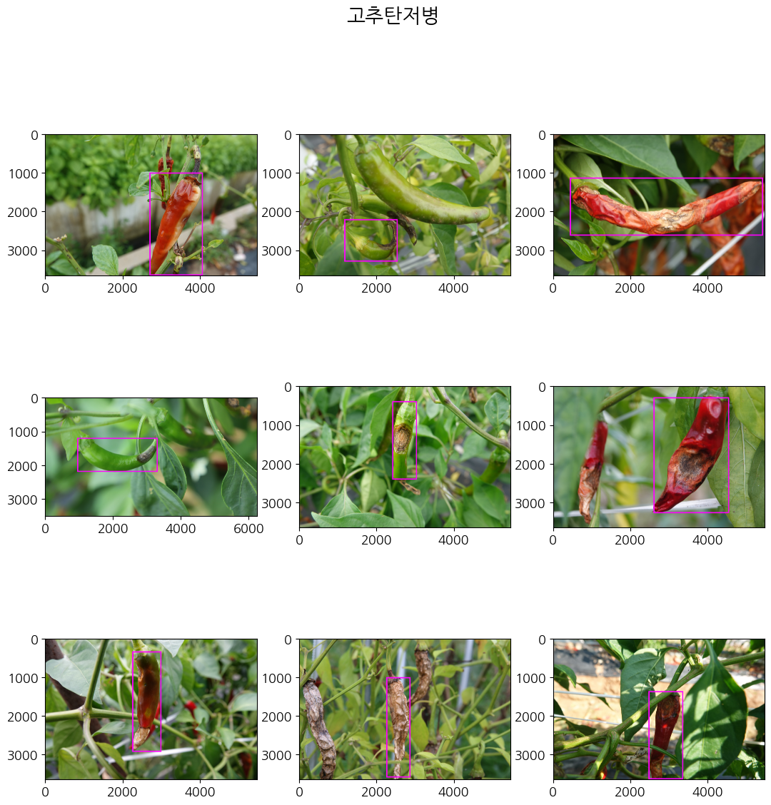
show_images_by_label(3)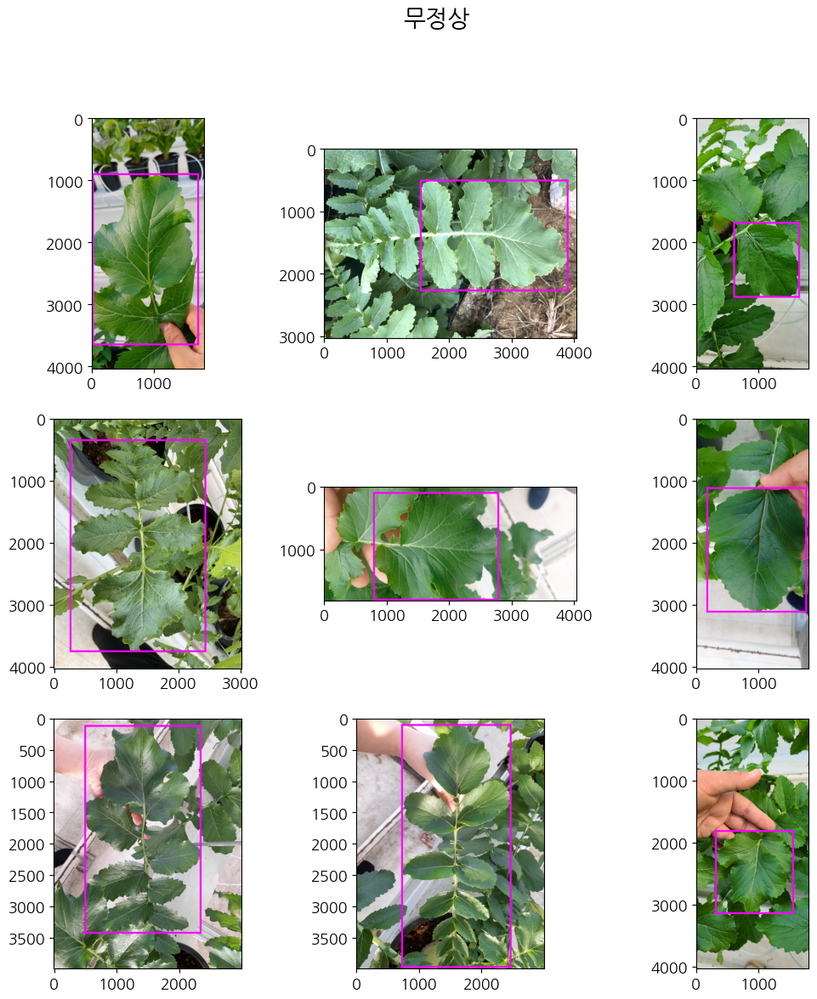
show_images_by_label(5)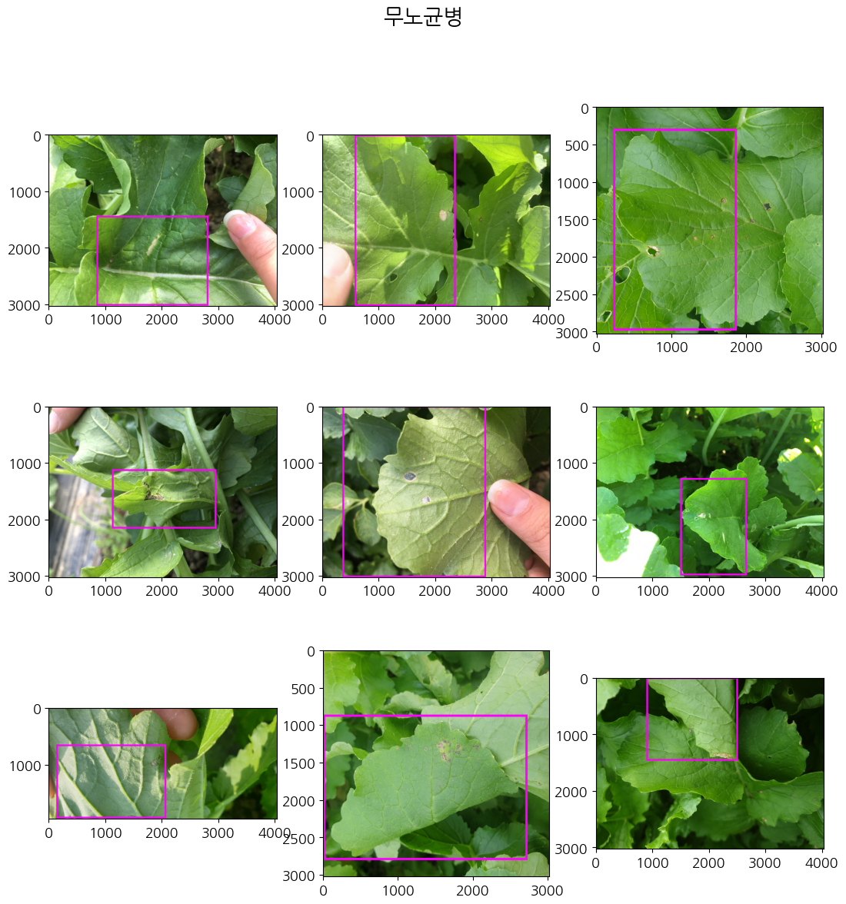
show_images_by_label(7)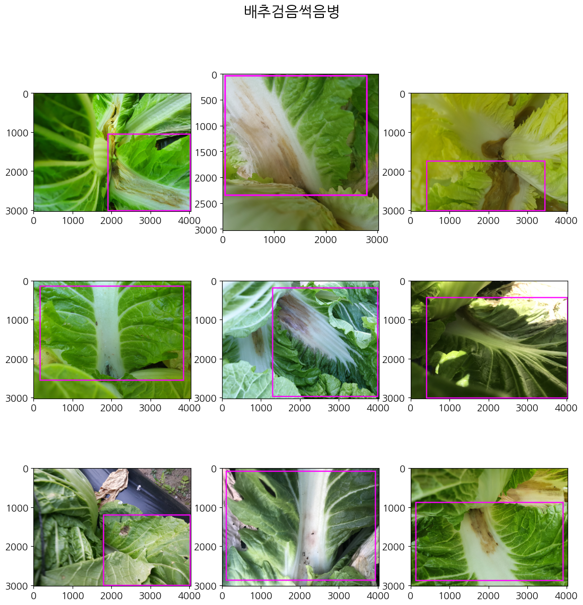
show_images_by_label(9)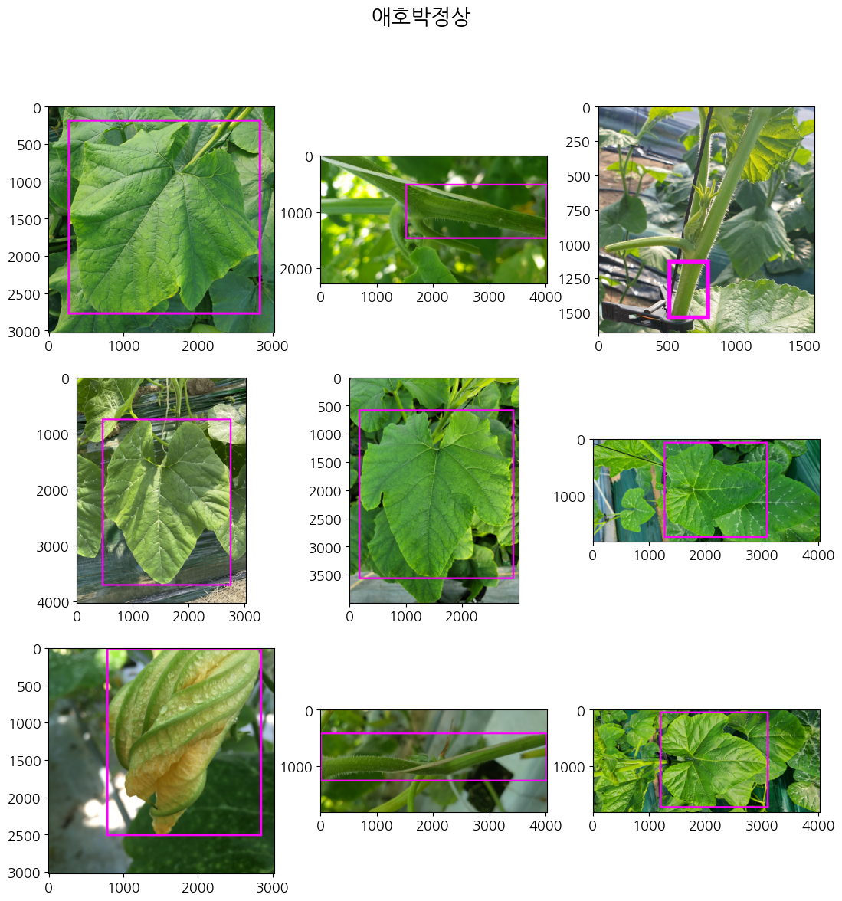
show_images_by_label(11)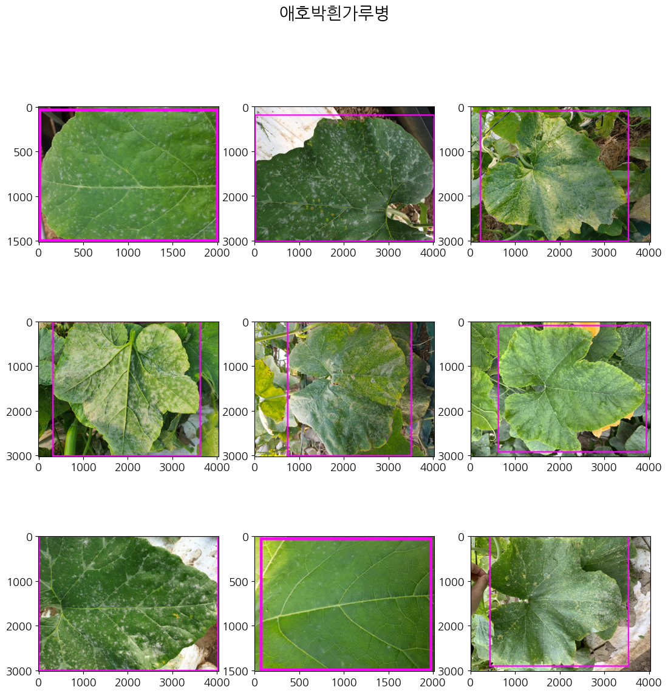
show_images_by_label(19)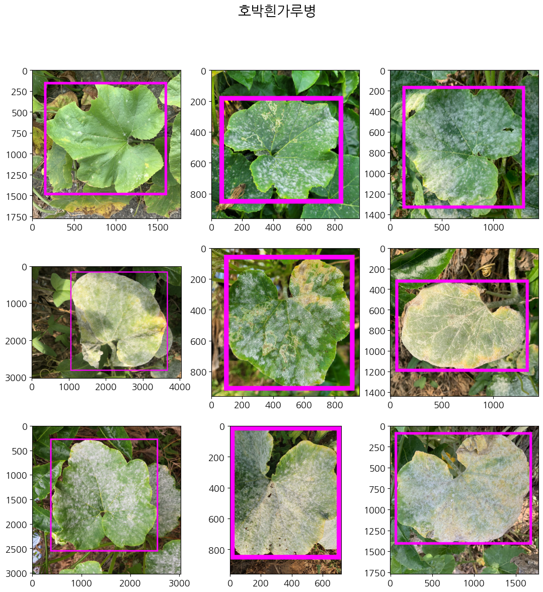
이미지 데이터를 살펴보았을 때, 질병 작물에 대하여 바운딩 박스 처리가 잘 되어있음을 확인했습니다. image classification 뿐만 아니라, object detection 으로 모델학습을 진행하는 것도 고려할 수 있습니다. 다만, 작물을 이루는 요소가 잎, 줄기, 꽃 등이 있다보니 같은 레이블 안에서도 다른 특징의 이미지로 인식할 수 있다는 점이 우려되었습니다.
지금까지 노지작물 데이터에 대한 EDA를 진행하였습니다. EDA를 통해 라벨 데이터를 처리하였고, 데이터의 분포가 어떻게 되어있는지 확인할 수 있었습니다. 또한 어떤 방향으로 인공지능 모델 학습을 해야하는지 고민해볼 수 있었습니다.